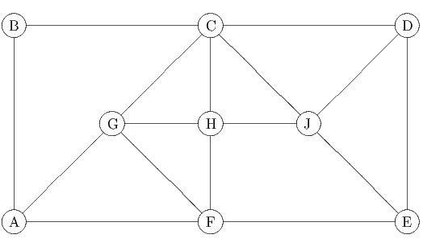

Due: Tuesday, February 21, 2023, by end of day.
Penalty for late homeworks: 10% for each day or part of a day.
The following graph G = (V,E) is used in question 1.

where x3, x4 and x5 are the slack variables in the three constraints. Find the Gomory and strong Gomory cutting planes implied by the three constraints. Express these constraints in terms of the original variables x1 and x2 and draw them on a graph of the feasible region.
How does the structure of the edges connecting vertex 6 to the rest of the graph affect the lifted odd hole inequality
We want to solve the MAXCUT problem on this graph. In this problem, the vertices are partitioned into two sets with the objective of maximizing the total weight of the edges with one endpoint in each set. This can be modeled as an integer programming problem by introducing binary variables xe to indicate whether an edge is in the cut.
Take the unit box as the initial LP relaxation. Solve this problem by using the following two-step procedure:
and repeating. Write down the cuts violated at each iteration. You should only need to add one constraint of the second type. (You may want to use AMPL or a similar package to solve the LP relaxations. See the course webpage for details on how to use AMPL. If you need more help, see me. The initial AMPL model and data file are in
http://www.rpi.edu/~mitchj/matp6620/hw3html/hw3q4.mod
http://www.rpi.edu/~mitchj/matp6620/hw3html/hw3q4.dat
respectively.)
Show that this inequality is implied by two inequalities corresponding to cycles of length 3.
| John Mitchell |
| Amos Eaton 325 |
| x6915. |
| mitchj at rpi dot edu |
| Office hours: Tuesday 12-4pm and Friday 12-2pm on webex: https://rensselaer.webex.com/meet/mitchj. |
| Note: Classes on Feb 21 follow a Monday schedule. I will still have office hours 12-4pm. |